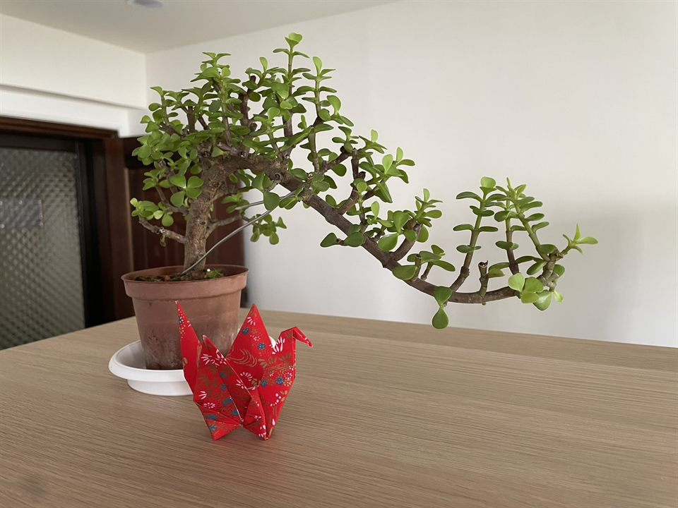

聯絡漸明

心理諮商預約
如果你希望預約心理諮商，請透過以下表單提出申請。你可以指定希望預約的心理師，也可以請漸明協助安排。
填寫諮商預約申請表 →送出申請不代表預約已成立。漸明收到申請後，將依據所提供的資訊及心理師的接案情況協助安排，並由心理師與你聯繫確認。
一般行政詢問
如有服務項目、收費、場地租借或其他行政事項的疑問，歡迎透過電話或電子郵件與我們聯繫。
電話與電子郵件不提供心理諮商或心理困擾的專業評估。如希望尋求心理諮商，請使用上方的預約申請表。

如果你希望預約心理諮商，請透過以下表單提出申請。你可以指定希望預約的心理師，也可以請漸明協助安排。
填寫諮商預約申請表 →送出申請不代表預約已成立。漸明收到申請後，將依據所提供的資訊及心理師的接案情況協助安排，並由心理師與你聯繫確認。
如有服務項目、收費、場地租借或其他行政事項的疑問，歡迎透過電話或電子郵件與我們聯繫。
電話與電子郵件不提供心理諮商或心理困擾的專業評估。如希望尋求心理諮商，請使用上方的預約申請表。